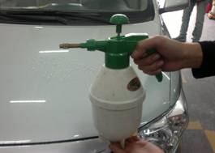
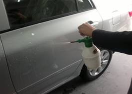
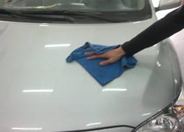

当前位置：首页 > 实训项目与考核 > 实训项目清单
项目流程
表3 新车开蜡的流程
| 环节 | 项目 | 具体程序 | 操作目的及注意事项 | 作业示意图 |
|---|---|---|---|---|
| 1 | 冲洗车身 | 1）用清洗机将车身漆面冲洗干净。 | 注意事项： 1）清洗中不必使用清洗剂，水压不要高于7MPa |
|
| 2 | 调配开蜡水 | 1）选择开蜡水，按比例将开蜡水稀释。 2）将开蜡水装入手动喷壶或电动喷雾器中待用。 |
注意事项： 1)判明车漆表面的封漆蜡种类。 |
 |
| 3 | 喷开蜡水 | 1）将手动喷壶或气动喷雾器内的开蜡水均匀的喷晒于车身表面。 | 目的： 1）使开蜡水溶解封漆蜡。 |
 |
| 4 | 擦拭 | 1）等待6-7min，封漆蜡溶解。 2）用半湿的毛巾对车身进行擦拭。 |
注意事项： 1）擦拭时注意车身的边缘或转角部分，车门、车窗密封橡胶条的边缝、车牌、车灯、车门框等处残存的车蜡。 |
 |
| 5 | 用清洗剂清洗车身 | 1）使用冷水高压清洗机冲洗车身表面。 2）喷上清洗剂进行清洗。 3）再用高压水冲洗干净车身，擦干即可。 |
目的： 1）清洁车身。 |
上一页 1 2 3 4 5 6 7 8 下一页